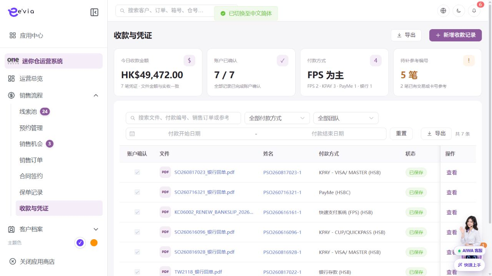
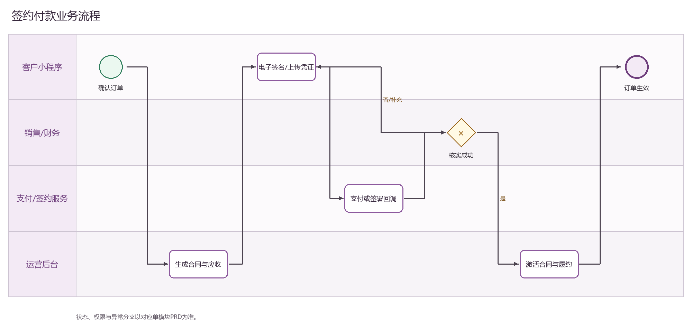

收款与付款凭证 PRD
下载 Word 文档收款与付款凭证 PRD
运营后台研发详细需求规格 · V2.2 · 2026-09-09
1 文档目标与范围
记录多渠道收款、上传凭证、执行账户确认和订单核销，并处理差额、重复款及退款关联。 本文档明确页面字段、操作流程、业务规则、跨端契约、权限和验收条件。
| 属性 | 内容 |
|---|---|
| 文档编号 | OS-OPS-PRD-09 |
| 产品基线 | AiwaBot产品原型 V3.2 与 OneStorage运营后台原型 V1.1 |
| 版本 | V2.2 2026-09-09 |
1.1 原型界面依据
本模块界面直接取自 AiwaBot产品原型-v3.2.html。真实截图及功能点对应说明见“界面与功能对应说明”。
2 界面与页面结构
2.1 界面与功能对应说明
以下真实原型截图用于确定页面区域、入口和交互位置；字段校验、状态变化和服务端处理以本PRD功能规格为准。

| 说明项 | 界面辅助说明 |
|---|---|
| 对应功能点 | OS-OPS-PRD-09-FP01 新增收款记录；OS-OPS-PRD-09-FP02 上传凭证；OS-OPS-PRD-09-FP03 账户确认；OS-OPS-PRD-09-FP04 核销；OS-OPS-PRD-09-FP05 撤销或退款关联 |
| 页面区域 | 收款与凭证列表及待补签提示由查询条件、结果列表、状态标识、行级操作和分页区组成。 |
| 交互要求 | 查询条件可组合、重置并在返回时保留；列表与导出共用同一数据范围；按钮依据权限、状态和allowedActions显示。 |
| 状态与权限 | 动作由allowedActions控制；无权限隐藏入口，接口仍执行403校验并记录审计。 |
2.3 筛选条件
| 筛选项 | 规则 |
|---|---|
| 文件、付款编号、销售订单或参考编号 | 支持组合查询、重置和返回保留。 |
| 付款方式 | 支持组合查询、重置和返回保留。 |
| 账户确认 | 支持组合查询、重置和返回保留。 |
| 状态 | 支持组合查询、重置和返回保留。 |
| 团队 | 支持组合查询、重置和返回保留。 |
| 付款日期范围 | 支持组合查询、重置和返回保留。 |
3 列表字段规格
>| 字段ID | 字段 | 来源 | 展示与交互规则 |
|---|---|---|---|
| OS-OPS-PRD-09-L01 | 账户确认 | 业务主域 | 详情与导出保持一致；空值显示—，不使用模拟值补齐。 |
| OS-OPS-PRD-09-L02 | 文件 | 文件服务 | 显示文件名、版本和状态；查看下载需权限并记录审计。 |
| OS-OPS-PRD-09-L03 | 姓名 | 业务主域 | 详情与导出保持一致；空值显示—，不使用模拟值补齐。 |
| OS-OPS-PRD-09-L04 | 付款方式 | 业务主域 | 详情与导出保持一致；空值显示—，不使用模拟值补齐。 |
| OS-OPS-PRD-09-L05 | 状态 | 服务端/关联主数据 | 以标签显示服务端枚举；不可由前端自行推导。 |
| OS-OPS-PRD-09-L06 | 创建于 | 业务主域 | 详情与导出保持一致；空值显示—，不使用模拟值补齐。 |
| OS-OPS-PRD-09-L07 | 销售订单 | 业务主域 | 详情与导出保持一致；空值显示—，不使用模拟值补齐。 |
| OS-OPS-PRD-09-L08 | 发票 | 业务主域 | 详情与导出保持一致；空值显示—，不使用模拟值补齐。 |
| OS-OPS-PRD-09-L09 | 销售付款父级 | 业务主域 | 详情与导出保持一致；空值显示—，不使用模拟值补齐。 |
| OS-OPS-PRD-09-L10 | 文件金额 | 财务或报价主域 | 显示币种和两位小数；不得用格式化字符串参与计算。 |
| OS-OPS-PRD-09-L11 | 金额 | 服务端/关联主数据 | HKD金额右对齐，保留两位小数；统计与导出一致。 |
| OS-OPS-PRD-09-L12 | 参考编号 | 服务端主键或业务编号 | 完整展示并支持复制；唯一且不可使用展示名称代替。 |
| OS-OPS-PRD-09-L13 | 付款日期 | 服务端时间 | 按Asia/Hong_Kong显示；空值显示—，排序使用原始时间。 |
| OS-OPS-PRD-09-L14 | 团队 | 组织或门店主数据 | 显示名称并保留ID；数据范围变化后重新校验。 |
| OS-OPS-PRD-09-L15 | 文件2 | 文件服务 | 显示文件名、版本和状态；查看下载需权限并记录审计。 |
| OS-OPS-PRD-09-L16 | 操作 | 服务端/关联主数据 | 根据allowedActions显示查看、编辑及状态动作；后端再次鉴权。 |
4 新增与编辑表单
| 字段ID | 字段 | 控件 | 必填 | 校验与保存规则 |
|---|---|---|---|---|
| OS-OPS-PRD-09-F01 | 销售订单 | 文本框 | 条件必填 | 去除首尾空格；保存原始值与标准化值。 |
| OS-OPS-PRD-09-F02 | 付款方式 | 单选或下拉选择 | 必填 | 选项来自服务端字典；提交编码值，界面显示名称。 |
| OS-OPS-PRD-09-F03 | 文件金额 | 金额输入 | 条件必填 | 输入大于等于0，最多两位小数；服务端以最小货币单位重算。 |
| OS-OPS-PRD-09-F04 | 实收金额 | 金额输入 | 条件必填 | 输入大于等于0，最多两位小数；服务端以最小货币单位重算。 |
| OS-OPS-PRD-09-F05 | 付款日期 | 日期或日期时间 | 必填 | 服务端校验起止顺序、营业日和截止规则。 |
| OS-OPS-PRD-09-F06 | 账户确认 | 文本框 | 条件必填 | 去除首尾空格；保存原始值与标准化值。 |
| OS-OPS-PRD-09-F07 | 参考编号 | 只读或检索选择 | 系统生成/必填 | 新增时由服务端生成；关联编号必须存在且在数据范围内。 |
| OS-OPS-PRD-09-F08 | 收款账户 | 文本框 | 条件必填 | 去除首尾空格；保存原始值与标准化值。 |
| OS-OPS-PRD-09-F09 | 团队 | 单选或下拉选择 | 必填 | 选项来自服务端字典；提交编码值，界面显示名称。 |
| OS-OPS-PRD-09-F10 | 付款凭证 | 文件上传 | 条件必填 | 使用短期签名上传，校验类型、大小、哈希和病毒扫描结果。 |
| OS-OPS-PRD-09-F11 | 补充文件 | 文件上传 | 条件必填 | 使用短期签名上传，校验类型、大小、哈希和病毒扫描结果。 |
| OS-OPS-PRD-09-F12 | 备注 | 多行文本 | 条件必填 | 最多500字；拒绝或异常原因不得只输入空白。 |
5 功能点详细设计
| 功能编号 | 功能点 | 目标 |
|---|---|---|
| OS-OPS-PRD-09-FP01 | 新增收款记录 | 选择订单后显示应收和未收金额，录入渠道、金额和参考编号。 |
| OS-OPS-PRD-09-FP02 | 上传凭证 | 获取短期上传凭证并校验类型、大小、哈希和病毒扫描。 |
| OS-OPS-PRD-09-FP03 | 账户确认 | 财务核对银行或渠道流水，记录确认人和时间。 |
| OS-OPS-PRD-09-FP04 | 核销 | 按付款计划分配金额，支持部分核销和多订单限制规则。 |
| OS-OPS-PRD-09-FP05 | 撤销或退款关联 | 必须审批并以冲销记录实现，不修改原收款。 |
5.1 新增收款记录
功能编号：OS-OPS-PRD-09-FP01
功能目的：选择订单后显示应收和未收金额，录入渠道、金额和参考编号。
使用角色与入口：具备本模块创建权限的运营人员；从模块列表右上角新增入口或关联对象快捷入口进入。入口显示前校验菜单、动作和数据范围。
前置条件：用户登录有效并具备创建或批量权限；关联主数据有效且属于dataScope；页面已加载最新字典、业务配置和allowedActions。
界面操作：打开新增界面，按页面分组录入销售订单、付款方式、文件金额、实收金额、付款日期、账户确认、参考编号、收款账户、团队、付款凭证、补充文件、备注；关联对象使用检索选择。点击保存前完成字段级和跨字段校验。
系统处理：服务端使用clientRequestId幂等校验，在事务内生成业务编号、主对象、初始状态和审计记录；事务提交后发布领域事件。选择订单后显示应收和未收金额，录入渠道、金额和参考编号。
业务规则：核销总额不得超过可用收款余额；已确认记录只能通过冲销更正。服务端必须重复校验。
成功结果：页面提示“新增收款记录成功”，刷新对象状态、version、allowedActions、关联对象和时间线；如产生异步任务，同时显示任务编号和进度入口。
异常与恢复：400保留输入；403拒绝并审计；409要求刷新；超时按clientRequestId查询；部分成功显示明细和补偿入口。
跨端影响：支付渠道回调生成待确认或自动确认记录；接收端打开后重新鉴权并回源。
验收条件：在允许状态下完成新增收款记录时仅产生一次预期数据变化和一次审计记录；越权、错误状态、重复提交及版本冲突均不得产生重复对象或越级状态。
5.2 上传凭证
功能编号：OS-OPS-PRD-09-FP02
功能目的：获取短期上传凭证并校验类型、大小、哈希和病毒扫描。
使用角色与入口：当前对象负责人、被分派执行人或获授权管理员；从列表行操作、详情页主操作区或待办入口进入。入口显示前校验菜单、动作和数据范围。
前置条件：用户登录有效；目标对象存在且属于用户dataScope；当前状态包含该动作；页面持有最新version和allowedActions。涉及金额、库存、附件或第三方结果时必须回源确认。
界面操作：在详情页执行上传凭证，填写或核对销售订单、文件金额、实收金额、付款日期、参考编号、备注、状态、金额；界面随步骤显示当前节点、下一步和可撤回条件。
系统处理：服务端调用POST /ops/v1/payments/{id}/actions/{action}，校验权限、当前状态、expectedVersion和业务不变量，在事务中写入状态及时间线。获取短期上传凭证并校验类型、大小、哈希和病毒扫描。
业务规则：同一付款渠道和参考编号不得重复确认；文件金额、实收金额和核销金额分别保存。服务端必须重复校验。
成功结果：页面提示“上传凭证成功”，刷新对象状态、version、allowedActions、关联对象和时间线；如产生异步任务，同时显示任务编号和进度入口。
异常与恢复：400保留输入；403拒绝并审计；409要求刷新；超时按clientRequestId查询；部分成功显示明细和补偿入口。
跨端影响：客户小程序付款状态以已确认核销结果为准；接收端打开后重新鉴权并回源。
验收条件：在允许状态下完成上传凭证时仅产生一次预期数据变化和一次审计记录；越权、错误状态、重复提交及版本冲突均不得产生重复对象或越级状态。
5.3 账户确认
功能编号：OS-OPS-PRD-09-FP03
功能目的：财务核对银行或渠道流水，记录确认人和时间。
使用角色与入口：具备审批、财务或复核权限的人员；从待办中心、列表行操作或详情页审批区进入。入口显示前校验菜单、动作和数据范围。
前置条件：用户登录有效；目标对象存在且属于用户dataScope；当前状态包含该动作；页面持有最新version和allowedActions。涉及金额、库存、附件或第三方结果时必须回源确认。
界面操作：详情页展示申请信息、金额/附件、历史意见及销售订单、文件金额、实收金额、付款日期、参考编号、备注、状态、金额；选择通过或拒绝，拒绝原因必填，提交前二次确认。
系统处理：服务端调用POST /ops/v1/payments/{id}/actions/{action}，校验权限、当前状态、expectedVersion和业务不变量，在事务中写入状态及时间线。财务核对银行或渠道流水，记录确认人和时间。
业务规则：同一付款渠道和参考编号不得重复确认；文件金额、实收金额和核销金额分别保存。服务端必须重复校验。
成功结果：页面提示“账户确认成功”，刷新对象状态、version、allowedActions、关联对象和时间线；如产生异步任务，同时显示任务编号和进度入口。
异常与恢复：400保留输入；403拒绝并审计；409要求刷新；超时按clientRequestId查询；部分成功显示明细和补偿入口。
跨端影响：合同生效和订单履约监听付款确认事件；接收端打开后重新鉴权并回源。
验收条件：在允许状态下完成账户确认时仅产生一次预期数据变化和一次审计记录；越权、错误状态、重复提交及版本冲突均不得产生重复对象或越级状态。
5.4 核销
功能编号：OS-OPS-PRD-09-FP04
功能目的：按付款计划分配金额，支持部分核销和多订单限制规则。
使用角色与入口：具备审批、财务或复核权限的人员；从待办中心、列表行操作或详情页审批区进入。入口显示前校验菜单、动作和数据范围。
前置条件：用户登录有效；目标对象存在且属于用户dataScope；当前状态包含该动作；页面持有最新version和allowedActions。涉及金额、库存、附件或第三方结果时必须回源确认。
界面操作：详情页展示申请信息、金额/附件、历史意见及销售订单、文件金额、实收金额、付款日期、参考编号、备注、状态、金额；选择通过或拒绝，拒绝原因必填，提交前二次确认。
系统处理：服务端调用POST /ops/v1/payments/{id}/actions/{action}，校验权限、当前状态、expectedVersion和业务不变量，在事务中写入状态及时间线。按付款计划分配金额，支持部分核销和多订单限制规则。
业务规则：文件金额、实收金额和核销金额分别保存；核销总额不得超过可用收款余额。服务端必须重复校验。
成功结果：页面提示“核销成功”，刷新对象状态、version、allowedActions、关联对象和时间线；如产生异步任务，同时显示任务编号和进度入口。
异常与恢复：400保留输入；403拒绝并审计；409要求刷新；超时按clientRequestId查询；部分成功显示明细和补偿入口。
跨端影响：支付渠道回调生成待确认或自动确认记录；接收端打开后重新鉴权并回源。
验收条件：在允许状态下完成核销时仅产生一次预期数据变化和一次审计记录；越权、错误状态、重复提交及版本冲突均不得产生重复对象或越级状态。
5.5 撤销或退款关联
功能编号：OS-OPS-PRD-09-FP05
功能目的：必须审批并以冲销记录实现，不修改原收款。
使用角色与入口：当前对象负责人、被分派执行人或获授权管理员；从列表行操作、详情页主操作区或待办入口进入。入口显示前校验菜单、动作和数据范围。
前置条件：用户登录有效；目标对象存在且属于用户dataScope；当前状态包含该动作；页面持有最新version和allowedActions。涉及金额、库存、附件或第三方结果时必须回源确认。
界面操作：在详情页执行撤销或退款关联，填写或核对销售订单、文件金额、实收金额、付款日期、参考编号、备注、状态、金额；界面随步骤显示当前节点、下一步和可撤回条件。
系统处理：服务端调用POST /ops/v1/payments/{id}/actions/{action}，校验权限、当前状态、expectedVersion和业务不变量，在事务中写入状态及时间线。必须审批并以冲销记录实现，不修改原收款。
业务规则：同一付款渠道和参考编号不得重复确认；文件金额、实收金额和核销金额分别保存。服务端必须重复校验。
成功结果：页面提示“撤销或退款关联成功”，刷新对象状态、version、allowedActions、关联对象和时间线；如产生异步任务，同时显示任务编号和进度入口。
异常与恢复：400保留输入；403拒绝并审计；409要求刷新；超时按clientRequestId查询；部分成功显示明细和补偿入口。
跨端影响：客户小程序付款状态以已确认核销结果为准；接收端打开后重新鉴权并回源。
验收条件：在允许状态下完成撤销或退款关联时仅产生一次预期数据变化和一次审计记录；越权、错误状态、重复提交及版本冲突均不得产生重复对象或越级状态。
6 状态机与业务规则
| 对象 | 状态流转 |
|---|---|
| 收款与付款凭证 | 待上传→待核对→已确认→已核销；差异→异常待处理；错误记录→已撤销 |
| 异步任务 | 待执行→执行中→成功/失败→重试/人工处理 |
| 规则ID | 业务规则 |
|---|---|
| OS-OPS-PRD-09-R01 | 同一付款渠道和参考编号不得重复确认 |
| OS-OPS-PRD-09-R02 | 文件金额、实收金额和核销金额分别保存 |
| OS-OPS-PRD-09-R03 | 核销总额不得超过可用收款余额 |
| OS-OPS-PRD-09-R04 | 付款日期使用业务发生日，创建时间使用服务器时间 |
| OS-OPS-PRD-09-R05 | 已确认记录只能通过冲销更正 |
| OS-OPS-PRD-09-R06 | 所有写请求携带clientRequestId和expectedVersion，重复请求返回首次结果 |
| OS-OPS-PRD-09-R07 | 服务端返回allowedActions，前端仅据此展示按钮，后端仍逐动作鉴权 |
| OS-OPS-PRD-09-R08 | 列表、详情、关联选择器、统计和导出使用同一数据范围 |
| OS-OPS-PRD-09-R09 | 创建、编辑、状态流转、导出、下载和审批均记录操作审计 |
| OS-OPS-PRD-09-R10 | 第三方调用失败不得伪装主业务成功，进入可重试或人工处理状态 |
7 BPMN流程

客户、后台、执行端和领域服务节点必须与状态机一致。
8 跨端交互规则
| 规则ID | 交互规则 |
|---|---|
| OS-OPS-PRD-09-X01 | 支付渠道回调生成待确认或自动确认记录 |
| OS-OPS-PRD-09-X02 | 客户小程序付款状态以已确认核销结果为准 |
| OS-OPS-PRD-09-X03 | 合同生效和订单履约监听付款确认事件 |
客户小程序仅访问本人数据，工单小程序仅访问本人或团队任务
深链打开后重新校验身份、权限和最新状态
金额、库存、状态和allowedActions必须回源
离线重试沿用同一clientRequestId
9 接口与事件契约
| 契约 | 路径或事件 | 要求 |
|---|---|---|
| 列表 | GET /ops/v1/payments | 分页、排序、筛选、数据范围和脱敏 |
| 详情 | GET /ops/v1/payments/{id} | version、关联对象、时间线和allowedActions |
| 新增 | POST /ops/v1/payments | clientRequestId幂等 |
| 编辑 | PATCH /ops/v1/payments/{id} | expectedVersion并发控制 |
| 动作 | POST /ops/v1/payments/{id}/actions/{action} | 动作级权限和状态前置 |
| 事件 | 收款与付款凭证.Changed.v1 | eventId、aggregateId、version和occurredAt |
10 异常与边界处理
| 场景 | 处理 |
|---|---|
| 400字段错误 | 字段级提示并保留输入 |
| 403无权限 | 拒绝并记录审计 |
| 404不存在 | 不泄露额外对象信息 |
| 409版本冲突 | 刷新后重新操作 |
| 重复请求 | 返回首次幂等结果 |
| 第三方失败 | 进入重试或人工处理 |
11 验收标准
| 验收ID | 验收条件 |
|---|---|
| OS-OPS-PRD-09-AC01 | 列表字段、筛选、分页、排序和导出一致 |
| OS-OPS-PRD-09-AC02 | 表单字段、必填和跨字段校验完整 |
| OS-OPS-PRD-09-AC03 | 所有动作同时校验权限、数据范围和状态 |
| OS-OPS-PRD-09-AC04 | 重复请求无重复记录或副作用 |
| OS-OPS-PRD-09-AC05 | 跨端编号、状态、金额和时间一致 |
| OS-OPS-PRD-09-AC06 | 异常和空数据有明确反馈 |
| OS-OPS-PRD-09-AC07 | 敏感字段按权限脱敏并审计 |
| OS-OPS-PRD-09-AC08 | P0规则具有自动化测试 |